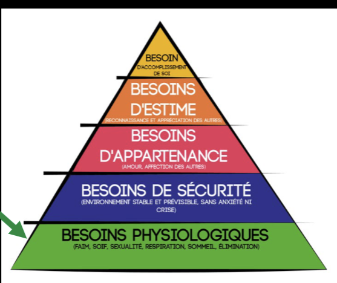

Communication descendante
Table des matières
L'essentiel : La communication descendante, c'est l'information que la direction transmet aux travailleurs. Quand elle est claire, transparente et adaptée, elle réduit l'anxiété, donne du sens et facilite l'engagement. Quand elle est défaillante (silence, contradictions, jargon), elle crée incompréhension, rumeurs et tension.
Définition
Communication descendante : flux d'information allant des niveaux supérieurs (direction, cadres) vers les niveaux opérationnels (superviseurs, travailleurs).
C'est l'information qui répond aux questions : que se passe-t-il dans l'organisation? quelles sont les priorités? qu'est-ce qui change? comment ça nous concerne?
{kind=link}

Toucher l'image pour l'agrandirModèle général de la communication : émetteur, canal, message, récepteur, rétroaction, bruit. Source : SST1010 (UQAM), séance 11. Usage personnel.
Contenus typiques
| Catégorie | Exemples |
|---|---|
| Stratégie et orientations | Plan d'affaires, priorités annuelles, vision |
| Décisions et changements | Réorganisations, nouveaux projets, fermetures |
| Politiques et procédures | Sécurité, RH, qualité |
| Indicateurs et résultats | Performance, sécurité, finances |
| Reconnaissance et bons coups | Réussites collectives, événements positifs |
| Mauvaises nouvelles | Incidents, pertes, ralentissements |
| Information sectorielle | Marché, concurrence, économie |
Pratiques efficaces
| Pratique | Effet |
|---|---|
| Clarté | Message simple, structuré, sans jargon inutile |
| Honnêteté | Y compris pour les mauvaises nouvelles. Le silence amplifie l'inquiétude. |
| Régularité | Communication continue, pas seulement en crise |
| Multi-canaux | Réunions, écrits, vidéos, terrain, adaptés au public |
| Adaptation au public | Le message à un travailleur souterrain n'est pas celui à un cadre |
| Boucle de retour | Permettre les questions, vraiment y répondre |
| Cohérence | Ce qui est dit en haut doit correspondre à ce qui se vit en bas |
| Présence terrain | Cadres qui descendent eux-mêmes communiquer, pas seulement par courriel |
En cas de mauvaise nouvelle, communiquer rapidement, clairement, avec empathie. Le pire est l'absence de communication, qui produit rumeurs et anxiété.
Pièges fréquents
| Piège | Conséquence |
|---|---|
| Silence en période d'incertitude | Rumeurs, anxiété, désinformation |
| Jargon corporatif | Message non compris, sentiment d'éloignement |
| Communication purement écrite | Pas adaptée à tous les milieux (souterrain notamment) |
| Décalage discours-pratique | Perte de crédibilité durable |
| Information par filtres successifs | Distorsion à chaque niveau hiérarchique |
| Communication uniquement en crise | Pas de relation construite avec les équipes |
| Annonces majeures par courriel froid | Perçu comme méprisant |
| Pas de canal pour les questions | Frustration, sentiment d'unilatéralité |
Application en mines
Particularités du minier
| Aspect | Adaptation |
|---|---|
| Multi-sites | Risque de communication centrale qui ne descend pas jusqu'aux sites |
| Comparatif des cycles FIFO (14/14, 20/10, 21/7) et rotations | Travailleurs absents lors d'annonces, doivent recevoir l'information à leur retour |
| Souterrain | Pas de courriel ni d'écran. Communication orale et papier nécessaires. |
| Quarts différents | Communication doit atteindre les trois quarts |
| Sous-traitance | Inclure les sous-traitants dans certaines communications, pas dans d'autres |
| Camps éloignés | Présence des cadres en camp pour les annonces importantes |
Canaux efficaces en mine
- Réunions de quart courtes et régulières
- Babillards dans les vestiaires, cafétéria, salles de pause
- Capsules vidéo (si Wi-Fi disponible)
- Présence des cadres en camp ou au chantier
- Bulletins corporatifs adaptés au format minier
- Réunions trimestrielles avec direction corporative ou de site
Indicateurs d'une communication descendante saine
- Travailleurs qui peuvent expliquer la stratégie avec leurs mots
- Peu de rumeurs persistantes
- Annonces majeures comprises et acceptées
- Indicateurs de climat stables même en période de changement
Documents et outils
| Document | Type | Source |
|---|---|---|
| Notes de cours SST1010, module 11 | Synthèse | UQAM |
| Guide INRS sur la communication interne | inrs.fr | |
| Modèles de plan de communication interne | Gabarit | Outils RH |
| Sondages de perception des communications | Outils | Variables |
Voir le centre de ressources : 📁 Documents et outils.
Pour aller plus loin
Références
- Quirke, B. (2008). Making the connections, using internal communication to turn strategy into action.
- Études en communication interne (Welch & Jackson).
Articles wiki connexes